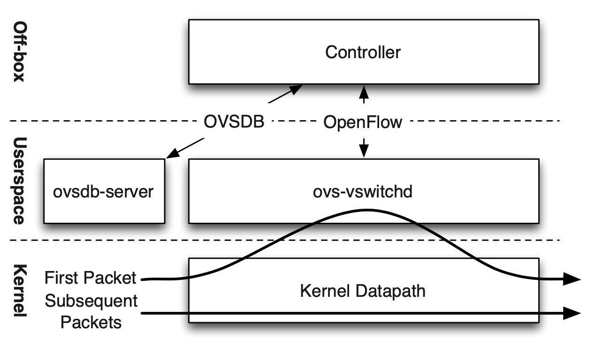
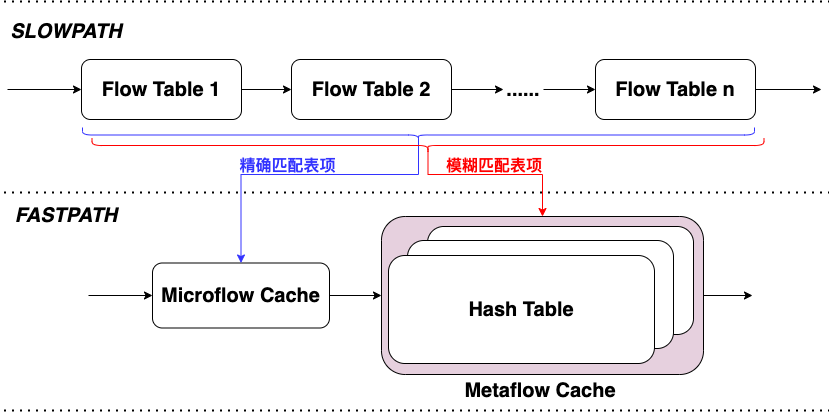
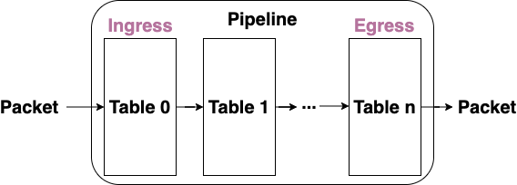

<!DOCTYPE html>
<html lang="en">
<head>
  <meta charset="UTF-8">
<meta name="viewport" content="width=device-width, initial-scale=1, maximum-scale=2">
<meta name="theme-color" content="#222">
<meta name="generator" content="Hexo 5.3.0">
  <link rel="apple-touch-icon" sizes="180x180" href="/images/apple-touch-icon-next.png">
  <link rel="icon" type="image/png" sizes="32x32" href="/images/favicon-32x32-next.png">
  <link rel="icon" type="image/png" sizes="16x16" href="/images/favicon-16x16-next.png">
  <link rel="mask-icon" href="/images/logo.svg" color="#222">

<link rel="stylesheet" href="/css/main.css">

<link rel="stylesheet" href="//fonts.googleapis.com/css?family=Exo 2:300,300italic,400,400italic,700,700italic|Caveat:300,300italic,400,400italic,700,700italic&display=swap&subset=latin,latin-ext">
<link rel="stylesheet" href="/lib/font-awesome/css/all.min.css">

<script id="hexo-configurations">
    var NexT = window.NexT || {};
    var CONFIG = {"hostname":"zobinhuang.github.io","root":"/","scheme":"Pisces","version":"7.8.0","exturl":false,"sidebar":{"position":"left","width":180,"display":"post","padding":10,"offset":12,"onmobile":false},"copycode":{"enable":true,"show_result":true,"style":null},"back2top":{"enable":true,"sidebar":true,"scrollpercent":true},"bookmark":{"enable":false,"color":"#222","save":"auto"},"fancybox":false,"mediumzoom":false,"lazyload":false,"pangu":false,"comments":{"style":"tabs","active":null,"storage":true,"lazyload":false,"nav":null},"algolia":{"hits":{"per_page":10},"labels":{"input_placeholder":"Search for Posts","hits_empty":"We didn't find any results for the search: ${query}","hits_stats":"${hits} results found in ${time} ms"}},"localsearch":{"enable":false,"trigger":"auto","top_n_per_article":1,"unescape":false,"preload":false},"motion":{"enable":true,"async":false,"transition":{"post_block":"fadeIn","post_header":"slideDownIn","post_body":"slideDownIn","coll_header":"slideLeftIn","sidebar":"slideUpIn"}}};
  </script>

  <meta name="description" content="img{margin-left: 20px; margin-right: 20px;}     table th{text-align:center;}     table td{text-align:center;}     p{margin-left: 15px; margin-right: 15px;}     .div_licence{font-size: 16px; word">
<meta property="og:type" content="website">
<meta property="og:title" content="网络虚拟化：Open vSwitch 论文阅读">
<meta property="og:url" content="https://zobinhuang.github.io/sec_learning_backup/Tech_Advanced_Network/Infrastructure_Virtualization_3_Open_vSwitch_Paper/index.html">
<meta property="og:site_name" content="Zobin">
<meta property="og:description" content="img{margin-left: 20px; margin-right: 20px;}     table th{text-align:center;}     table td{text-align:center;}     p{margin-left: 15px; margin-right: 15px;}     .div_licence{font-size: 16px; word">
<meta property="og:locale" content="en_US">
<meta property="og:image" content="https://i.creativecommons.org/l/by-nc-nd/4.0/88x31.png">
<meta property="og:image" content="https://zobinhuang.github.io/sec_learning_backup/Tech_Advanced_Network/Infrastructure_Virtualization_3_Open_vSwitch_Paper/pic/xxx.png">
<meta property="og:image" content="https://zobinhuang.github.io/sec_learning_backup/Tech_Advanced_Network/Infrastructure_Virtualization_3_Open_vSwitch_Paper/pic/open_vswitch.png">
<meta property="og:image" content="https://zobinhuang.github.io/sec_learning_backup/Tech_Advanced_Network/Infrastructure_Virtualization_3_Open_vSwitch_Paper/pic/openvswitch_microcache.png">
<meta property="og:image" content="https://zobinhuang.github.io/sec_learning_backup/Tech_Advanced_Network/Infrastructure_Virtualization_3_Open_vSwitch_Paper/pic/openvswitch_cache.png">
<meta property="og:image" content="https://zobinhuang.github.io/sec_learning_backup/Tech_Advanced_Network/Infrastructure_Virtualization_3_Open_vSwitch_Paper/pic/openflow_pipeline.png">
<meta property="article:published_time" content="2024-09-05T09:29:01.341Z">
<meta property="article:modified_time" content="2021-11-28T14:36:17.720Z">
<meta property="article:author" content="Zhuobin Huang">
<meta property="article:tag" content="Zobin">
<meta property="article:tag" content="黄卓彬">
<meta property="article:tag" content="zobinHuang">
<meta property="article:tag" content="网络工程">
<meta property="article:tag" content="Networking Engineering">
<meta name="twitter:card" content="summary">
<meta name="twitter:image" content="https://i.creativecommons.org/l/by-nc-nd/4.0/88x31.png">

<link rel="canonical" href="https://zobinhuang.github.io/sec_learning_backup/Tech_Advanced_Network/Infrastructure_Virtualization_3_Open_vSwitch_Paper/">


<script id="page-configurations">
  // https://hexo.io/docs/variables.html
  CONFIG.page = {
    sidebar: "",
    isHome : false,
    isPost : false,
    lang   : 'en'
  };
</script>

  <title>网络虚拟化：Open vSwitch 论文阅读 | Zobin
</title>
  


  <noscript>
  <style>
  .use-motion .brand,
  .use-motion .menu-item,
  .sidebar-inner,
  .use-motion .post-block,
  .use-motion .pagination,
  .use-motion .comments,
  .use-motion .post-header,
  .use-motion .post-body,
  .use-motion .collection-header { opacity: initial; }

  .use-motion .site-title,
  .use-motion .site-subtitle {
    opacity: initial;
    top: initial;
  }

  .use-motion .logo-line-before i { left: initial; }
  .use-motion .logo-line-after i { right: initial; }
  </style>
</noscript>

<link rel="alternate" href="/atom.xml" title="Zobin" type="application/atom+xml">
</head>

<body itemscope itemtype="http://schema.org/WebPage">
  <div class="container use-motion">
    <div class="headband"></div>

    <header class="header" itemscope itemtype="http://schema.org/WPHeader">
      <div class="header-inner"><div class="site-brand-container">
  <div class="site-nav-toggle">
    <div class="toggle" aria-label="Toggle navigation bar">
      <span class="toggle-line toggle-line-first"></span>
      <span class="toggle-line toggle-line-middle"></span>
      <span class="toggle-line toggle-line-last"></span>
    </div>
  </div>

  <div class="site-meta">

    <a href="/" class="brand" rel="start">
      <span class="logo-line-before"><i></i></span>
      <h1 class="site-title">Zobin</h1>
      <span class="logo-line-after"><i></i></span>
    </a>
      <p class="site-subtitle" itemprop="description">Lovin' Tech with Tea</p>
  </div>

  <div class="site-nav-right">
    <div class="toggle popup-trigger">
    </div>
  </div>
</div>


<nav class="site-nav">
  <ul id="menu" class="main-menu menu">
        <li class="menu-item menu-item-home">

    <a href="/" rel="section"><i class="fa fa-home fa-fw"></i>Home</a>

  </li>
        <li class="menu-item menu-item-about-me">

    <a href="/sec_about/" rel="section"><i class="fa fa-user fa-fw"></i>About Me</a>

  </li>
        <li class="menu-item menu-item-library">

    <a href="/sec_learning/" rel="section"><i class="fa fa-duotone fa-book fa-fw"></i>Library</a>

  </li>
        <li class="menu-item menu-item-production">

    <a href="/sec_music/" rel="section"><i class="fa fa-music fa-fw"></i>Production</a>

  </li>
        <li class="menu-item menu-item-thoughts">

    <a href="/sec_thoughts/" rel="section"><i class="fa fa-heartbeat fa-fw"></i>Thoughts</a>

  </li>
  </ul>
</nav>


</div>
    </header>

    
  <div class="reading-progress-bar"></div>


    <main class="main">
      <div class="main-inner">
        <div class="content-wrap">
          
  
  

          <div class="content page posts-expand">
            

    
    
    
    <div class="post-block" lang="en">
      <header class="post-header">

<h1 class="post-title" itemprop="name headline">网络虚拟化：Open vSwitch 论文阅读
</h1>

<div class="post-meta">
  
  <ul class="breadcrumb">
          
            <li><a href="/sec_learning_backup/">SEC_LEARNING_BACKUP</a></li>
            <li><a href="/sec_learning_backup/Tech_Advanced_Network/">TECH_ADVANCED_NETWORK</a></li>
          <li>INFRASTRUCTURE_VIRTUALIZATION_3_OPEN_VSWITCH_PAPER</li>
        
  </ul>

</div>

</header>

      
      
      
      <div class="post-body">
          <head>
<style>
    img{margin-left: 20px; margin-right: 20px;}
    table th{text-align:center;}
    table td{text-align:center;}
    p{margin-left: 15px; margin-right: 15px;}
    .div_licence{font-size: 16px; word-spacing:0px; border:1px solid black;}
    .div_learning_post{font-size: 16px; word-spacing:0px;}
    .div_indicate_source{font-size: 18px; word-spacing:0px; background-color: #E0E0E0;}
</style>
<!--支持网页公式显示-->    
<script type="text/javascript" src="https://cdn.mathjax.org/mathjax/latest/MathJax.js?config=AM_HTMLorMML-full"></script>
</head>

<body>

<div align="center" class="div_indicate_source">
<h4>⚠ 转载请注明出处：<font color="red"><i>作者：ZobinHuang，更新日期：Mar.25 2021</i></font></h4>
</div>

<div class="div_licence">
  <br>
  <div align="center">
      <a rel="license noopener" target="_blank" href="http://creativecommons.org/licenses/by-nc-nd/4.0/"></a>
  </div>
  <p>
  &nbsp;&nbsp;&nbsp;&nbsp;本<span xmlns:dct="http://purl.org/dc/terms/" href="http://purl.org/dc/dcmitype/Text" rel="dct:type">作品</span>由 <span xmlns:cc="http://creativecommons.org/ns#" property="cc:attributionName"><b>ZobinHuang</b></span> 采用 <a rel="license noopener" target="_blank" href="http://creativecommons.org/licenses/by-nc-nd/4.0/"><font color="red">知识共享署名-非商业性使用-禁止演绎 4.0 国际许可协议</font></a> 进行许可，在进行使用或分享前请查看权限要求。若发现侵权行为，会采取法律手段维护作者正当合法权益，谢谢配合。
  </p>
</div>


<!--表格-->
<!--
<table border="1" align="center">
  <caption>表格</caption>
  <tr>
    <th>A</th>
    <th>B</th>
    <th>C</th>
  </tr>
  <tr>
    <td>xxx</td>
    <td>xxx</td>
    <td>xxx</td>
  </tr>
</table>
-->

<!--图片-->
<!--
<div align="center">
  
</div>
-->

<!--正文-->
<!--
<p>
&nbsp;&nbsp;&nbsp;&nbsp;公式：<span>`\overline{A}\overline{B}`</span>
</p>
-->

<!--标题-->
<h2>1. Open vSwitch 概述</h2>
<div class="div_learning_post">
<p>

<p>&nbsp;&nbsp;&nbsp;&nbsp;正如我们在 <a href="../Infrastructure_Virtualization_2_Network_Virtualization_Definition/index.html">网络虚拟化：基本概念</a> 中所提到的 <b>网络虚拟化</b> 的概念， Open vSwitch 就是虚拟网络的开源实现。官方定义为：一个虚拟的网络多层交换机的软件实现。以下分段介绍一下 Open vSwitch的一些特点。<br><br>&nbsp;&nbsp;&nbsp;&nbsp;Open vSwitch 采用了 SDN 的思想，即它所构建的 vSwitch 实际上是 遵循 Openflow 协议的SDN交换机，北向还会存在一个本地的或者远程的 SDN控制器 来对这些 vSwitch进行控制。基于 SDN 的设计思路使得虚拟机集群的控制与管理变得更加方便。<br><br>&nbsp;&nbsp;&nbsp;&nbsp;Open vSwitch 具有分布式的特性，这点我们在 <a href="../Infrastructure_Virtualization_2_Network_Virtualization_Definition/index.html">网络虚拟化：基本概念</a> 也有稍微提到，分布式的特性使得底层物理服务器的分散性对上层虚拟机网络的构建是不可见的，因此可以 “透明” 地实现跨主机的虚拟机间通信。<br><br>&nbsp;&nbsp;&nbsp;&nbsp;Open vSwitch 既可以在 Hypervisor 中作为 SDN交换机 运行，又可以在专用的交换设备中作为控制堆栈来运行，因此它已经被移植到多个虚拟化平台，交换芯片组和网络硬件加速器上。比如，它是 XenServer（思杰的虚拟机平台）中默认的网络交换机，它支持 Xen, Linux KVM， Virtual Box等 hypervisor，移植到 Intel 的 hypervisor Hyper-V 上也是可行的。Open vSwitch 的 Linux 内核实现自从内核版本3.3之后就被合并入主线。<br><br>&nbsp;&nbsp;&nbsp;&nbsp;Open vSwitch的大多数源代码都是用与平台无关的C语言编写的，从而可以轻松移植到各种环境。</p>
</p>
</div>

<h2>2. OpenFlow基础</h2>
<div class="div_learning_post">
<p>

<p>&nbsp;&nbsp;&nbsp;&nbsp;如果你对 OpenFlow还没有基础的了解，可以查阅 <a href="../Infrastructure_SDN_1_SDN_OpenFlow_Intro/index.html">OpenFlow 基础概念</a>。</p>
</p>
</div>

<h2>3. Open vSwitch 设计思路</h2>
<div class="div_learning_post">
<p>
<b><font color="red">此部分参考自论文：The Design and Implementation of Open vSwitch, NSDI' 15</font></b>
</p>
<h3>(1) Open vSwitch 结构大览</h3>
<div align="center">
  
</div>
<p>
&nbsp;&nbsp;&nbsp;&nbsp;正如我们上面所阐述的，OVS使用的是基于 Openflow 的SDN模型，在本地或者远端还存在着一个 SDN控制器 用于对流和流表进行增加、删除、更新、监控、获取统计数据等操作。而在本地操作系统上有两个比较主要的组成模块：<b>ovs-vswitchd</b> 和 <b>datapath kernel module</b>，前者是用户空间的常驻程序，功能有二：(a) 接收来自 SDN控制器 的流控制规则（称作 Action）；(b) 将转发规则缓存给后者，以加速转发操作。而后者是内核模块，负责对网络数据包做处理。以下我们借助一个数据包进入OVS被处理的流程，对系统的具体工作方式做阐述。
<br>&nbsp;&nbsp;&nbsp;&nbsp;我们结合上图进行分析，当某条流的第一个 packet 到达时，在 <b>datapath kernel path</b> 并不清楚该如何处理这个 packet，它便会将这个 packet 递交给用户态的 <b>ovs-vswitchd</b>，<b>ovs-vswitchd</b> 存储着该把某种特定 packet 转发至哪个 port 或者 tunnel 的转发规则（来自 SDN 控制器），当然 Action 还可能会包括 对包的修改，对包的采样，或者丢弃包等。拿到对应的 Action 后， <b>ovs-vswitchd</b> 把数据包和相应的 Action 交还给 <b>datapath kernel module</b>，后者会将这个 Action 缓存起来，以应付后面到达的同种类型的 packet。
</p>

<h3>(2) OVS 流缓存 (Flow Cache) 设计</h3>
<p>
&nbsp;&nbsp;&nbsp;&nbsp;上面我们谈到了 OVS 由 <b>ovs-vswitchd</b> 和 <b>datapath kernel module</b> 两个组成部分组成，这一节我们结合一下 OVS 的开发历史来关心一下 OVS 具体是如何把转发规则缓存到内核模块中去的。 
<br>&nbsp;&nbsp;&nbsp;&nbsp;在2007年刚刚开始开发运行在 Linux 上的 OVS 的时候，工程师们当然会认为只有把数据包的转发逻辑做在内核里才会有比较好的性能，因此他们把所有的 OpenFlow 处理逻辑写在了一个内核模块里，所有的数据包到达内核后都得到内核模块里按照标准的 OpenFlow 标准过一遍所有的流表，然后再送上用户空间。但是这么做有几个弊端：
<br>&nbsp;&nbsp;&nbsp;&nbsp;&nbsp;&nbsp;&nbsp;&nbsp;(a) 在内核里开发及其的困难，分布在系统里的其它内核模块也会不断更新，随时可能会被更改；
<br>&nbsp;&nbsp;&nbsp;&nbsp;&nbsp;&nbsp;&nbsp;&nbsp;(b) 基于内核模块开发的 OVS 不被 Linux 的发布版本所接受（可能是因为太庞大冗杂了）；
<br>&nbsp;&nbsp;&nbsp;&nbsp;&nbsp;&nbsp;&nbsp;&nbsp;(c) 直接使用 OpenFlow 流表组成的 pipeline 处理数据包会占用大量的 CPU 周期，导致虚拟机的运行收到一定的影响，得不偿失。（OpenFlow 在硬件 SDN 交换机上可能可以运行的很快，但是在通用的处理器上就很难做快了）。
<br>&nbsp;&nbsp;&nbsp;&nbsp;因此就有了上面所讲述的，用户态模块实现 OpenFlow 逻辑 (i.e. <b>ovs-vswitchd</b>)，内核模块利用流表缓存实现数据包的处理 (i.e. <b>datapath kernel module</b>)，下面对 内核缓存的几个版本迭代所简要介绍，以了解各个设计的意义。
</p>
<h4>&nbsp;&nbsp;&nbsp;&nbsp;(a) OVS Cache V1: Microflow Cache (微流缓存)</h4>
<div align="center">
  
</div>
<p>
&nbsp;&nbsp;&nbsp;&nbsp;初代的 OVS Cache，把内核里的缓存做成了一张单一的 Hash 表，这张 Hash 表的 Hash Key 覆盖了所有 OpenFlow 所支持的数据包头匹配字段，而 Hash Value 项则组合了针对某条流的若干 OpenFlow 流表组合出来的如上图所示，这种方案被称为 <b>Microflow Cache (微流缓存)</b>。这种方案是十分简单和轻巧的，因为它的内核实现完全就只是一张 Hash 表。同时我们很容易发现，这种方式可以照顾到每一条小流的具体规则，每一条缓存表项都是细粒度的。举个例子，对于一条单流来说，如果上层的控制器修改了其转发路径，那么这条单流的数据包会遇到 IP TTL 失效的问题，这时候内核模块就会去向用户空间询问针对这条单流的转发规则，可见微流缓存实现了对每一条小流的精细控制。
<br>&nbsp;&nbsp;&nbsp;&nbsp;在 OVS 的论文中，它又提到另一个问题：从上面这个例子出发，我们可以发现 OVS 会有一个很重要的性能维度 —— <b>流表项建立时间 (flow setup time)</b>，即从 “内核空间发生流规则匹配miss” 到 “用户空间将更新的流表项缓存到内核空间模块” 的时间。OVS 采用了几种方法来解决这个问题：
<br>&nbsp;&nbsp;&nbsp;&nbsp;&nbsp;&nbsp;&nbsp;&nbsp;(a) <b>Batch Flow Setup</b>：通过“将针对单流的流表项规则打包再下放内核缓存”的方式，减少系统调用次数来提高下放性能。
<br>&nbsp;&nbsp;&nbsp;&nbsp;&nbsp;&nbsp;&nbsp;&nbsp;(b) <b>Multi-thread</b>：在用户空间利用多线程，将下放的任务绑定多条线程上来充分利用CPU多核的优势。
</p>

<h4>&nbsp;&nbsp;&nbsp;&nbsp;(b) OVS Cache V2: Megaflow Cache (大流缓存)</h4>
<div align="center">
  
</div>
<p>
&nbsp;&nbsp;&nbsp;&nbsp;基于 MicroFlow 的设计在实际测试中存在一个问题：由于 MicroFlow Cache 是一种细粒度的控制方案，在有大量的 <b>短时小流</b> 的情况下，会出现很多的 Cache Miss，不仅导致数据包要频繁穿越 内核态-用户态 边界，而且在用户态还需要针对大量的 Cache Miss 的小流数据包执行一长串的 OpenFlow 流表查询。如上图所示，我们把用户空间的流表 pipeline 成为 <b>慢速路径 (slow path)</b>，把内核空间的 cache 模块称为 <b>快速路径 (fast path)</b>。当有数据包通过慢速路径的比例上升时，OVS 的转发性能必定会下降。
<br>&nbsp;&nbsp;&nbsp;&nbsp;OVS 认为相比于 Microflow Cache，<b>Megaflow Cache (大流缓存)</b>可以解决这个问题。Megaflow Cache 允许内核中缓存的表项不再是针对某一个具体的小流，而可以是小流的集合。这里我们举一个例子。
<br>&nbsp;&nbsp;&nbsp;&nbsp;假设在慢速路径 OpenFlow 流表中存在这样一条表项：
</p>
<table border="1" align="center">
  <tr>
    <th>匹配域</th>
    <th>Action</th>
  </tr>
  <tr>
    <td>src IP=200.100.0.0/16</td>
    <td>DROP</td>
  </tr>
</table>
<p>
&nbsp;&nbsp;&nbsp;&nbsp;此时到达一个数据包：
</p>
<table border="1" align="center">
  <tr>
    <th>数据包头</th>
  </tr>
  <tr>
    <td>src IP=200.100.10.1, dst IP=100.100.100.100, proto=TCP, sport=123, dport=80</td>
  </tr>
</table>
<p>
&nbsp;&nbsp;&nbsp;&nbsp;假设快速路径中未命中任何 cache，此时它被交给慢速路径 ovs-vswitchd 处理查询流表。结合 OpenFlow 流表中的表项，根据 MicroFlow Cache 的生成规则，它将生成一条下面的 MicroFlow Cache 并注入内核：
</p>
<table border="1" align="center">
  <tr>
    <th>匹配域</th>
    <th>Action</th>
  </tr>
  <tr>
    <td>src IP=200.100.10.1 dst IP=100.100.100.100 proto=TCP sport=123 dport=80</td>
    <td>DROP</td>
  </tr>
</table>
<p>
&nbsp;&nbsp;&nbsp;&nbsp;如果是 Megaflow Cache，将会是下面的：
</p>
<table border="1" align="center">
  <tr>
    <th>匹配域</th>
    <th>Action</th>
  </tr>
  <tr>
    <td>src IP=200.100.0.0/16</td>
    <td>DROP</td>
  </tr>
</table>
<p>
&nbsp;&nbsp;&nbsp;&nbsp;因此可以发现，MetaFlow Cache 可以解决 MicroFlow Cache 中由于大量短连接带来的频繁内核 Cache miss 的问题。与 MicroFlow Cache 相比，它更接近于 OpenFlow流表，体现在于 (a) 它在匹配的时候支持任意域的组合，且 (b) 支持对流的集合的处理而非只针对单独小流。在具体的实现中，为了支持上述两点，MetaFlow Cache 做了两个事情：
<br>&nbsp;&nbsp;&nbsp;&nbsp;(a) <b><font color="red">为了实现自定义域的匹配</font></b>：它所使用的 Hash 表不再是一张而是多张，每一种 Hash Key 的组合使用一张 Hash 表，以实现任意域的匹配，具体实现就是下文将要讲述的 <b>元组空间搜索算法 (Turple Space Search)</b>。每一个数据包到达 MegaFlow 表时，需要在多个 Hash 表中进行匹配，直到找到匹配的表项。
</p>&nbsp;&nbsp;&nbsp;&nbsp;(b) <b><font color="red">为了实现域的集合匹配：</font></b>：用户空间模块在下放规则到 Cache 上时， 下放的是 OpenFlow 表项的向量积 (cross product)，MetaFlow Cache 为了采用了 Lazy Approch

<h3>(3) 网包分类 (Packet Classification) 算法</h3>
<div align="center">
  
</div>
<p>
&nbsp;&nbsp;&nbsp;&nbsp;<b>网包分类</b> 指的是在一张流表中一个网络数据包匹配到相应的处理规则的过程。我们都知道 OpenFlow 中采用了 <b>多级流表技术</b>，对于一个数据包可能需要 10+ 个的流表进行处理，而一张流表内可能有需要若干次的哈希操作才能匹配到目的流表项，因此总共加起来可能会有 100+ 次的哈希操作，所以数据包的处理将是花费时间的。基于这种背景，对于应用在网络虚拟化中的SDN流表来说，由于匹配的域 (field) 实在是太通用了，可能会是以太网地址、IPv4地址、IPv6地址、TCP和UDP端口等的任意组合，如果包分类器没有做好，网包分类将会在原有基础上更加花费时间。而且，在通用处理器上做基于算法的网包分类本身就是一件成本很高的事情。所以在OVS中必须对这个问题进行优化，因为 hypervisor 的首要任务是运行用户的工作负载 (i.e. VM)，花太多的资源在网络上反而会得不偿失。
<br>&nbsp;&nbsp;&nbsp;&nbsp;OVS 在包分类器上采用的办法是 <b>元组空间搜索算法 (Turple Space Search)</b>，它为每一个匹配组合创建一张 hash 表，比如 (MAC src, MAC dest)，(IP src, IP dest, port src, port dest) 等。当每个包到达时，必须在所有的哈希表（对应所有匹配组合）中进行匹配，找出来所有匹配到的表项。若只有一条匹配项，则直接执行匹配项中对应的 Action；若有好几条匹配项，则执行优先级别最高的匹配项对应的 Action。在 <b>ovs-vswitchd</b> 和 <b>datapath kernel module</b> 中都是用这样的哈希表实现的，即内核空间 Megaflow Cache 采用的是这种设计，用户空间也使用这种设计实现了 OpenFlow 流表。值得注意的是，对于每一个数据包来说，虽然这样的搜索复杂度并不是最低的，但是它具有以下几个特点：
<br>&nbsp;&nbsp;&nbsp;&nbsp;&nbsp;&nbsp;&nbsp;&nbsp;(a) Update 的复杂度是 <span>`\O(1)`</span>，这里的 Update 指的是将来自控制器的更新转化为 hash 表项的过程。在虚拟环境中，控制器的更新是十分频繁的，因此这样的特性对于更新操作来说是十分友好的。
<br>&nbsp;&nbsp;&nbsp;&nbsp;&nbsp;&nbsp;&nbsp;&nbsp;(b) 这种方案使得域的匹配变得更加通用，可以任意组合，且不需要任何与算法相关的修改。
<br>&nbsp;&nbsp;&nbsp;&nbsp;&nbsp;&nbsp;&nbsp;&nbsp;(c) 这种方案对内存的占用是随着流数量线性增长的。
</p>

</div>
<!--ref-->

<h2>附录：参考源</h2>
<div class="div_learning_post">
<p>

<ol>
<li><a target="_blank" rel="noopener" href="https://www.usenix.org/system/files/conference/nsdi15/nsdi15-paper-pfaff.pdf">https://www.usenix.org/system/files/conference/nsdi15/nsdi15-paper-pfaff.pdf</a>, <b>The Design and Implementation of Open vSwitch, NSDI’ 15</b></li>
<li><a target="_blank" rel="noopener" href="https://www.youtube.com/watch?v=fmYpT0dT9fU&amp;t=618s">https://www.youtube.com/watch?v=fmYpT0dT9fU&amp;t=618s</a>, <b>NSDI ‘15 Presentation - The Design and Implementation of Open vSwitch</b></p>
</div>

</li>
</ol>
</body>

      </div>
      
      
      
    </div>
    
  <ul class="breadcrumb">
          
            <li><a href="/sec_learning_backup/">SEC_LEARNING_BACKUP</a></li>
            <li><a href="/sec_learning_backup/Tech_Advanced_Network/">TECH_ADVANCED_NETWORK</a></li>
          <li>INFRASTRUCTURE_VIRTUALIZATION_3_OPEN_VSWITCH_PAPER</li>
        
  </ul>

    
    
    


          </div>
          

<script>
  window.addEventListener('tabs:register', () => {
    let { activeClass } = CONFIG.comments;
    if (CONFIG.comments.storage) {
      activeClass = localStorage.getItem('comments_active') || activeClass;
    }
    if (activeClass) {
      let activeTab = document.querySelector(`a[href="#comment-${activeClass}"]`);
      if (activeTab) {
        activeTab.click();
      }
    }
  });
  if (CONFIG.comments.storage) {
    window.addEventListener('tabs:click', event => {
      if (!event.target.matches('.tabs-comment .tab-content .tab-pane')) return;
      let commentClass = event.target.classList[1];
      localStorage.setItem('comments_active', commentClass);
    });
  }
</script>

        </div>
          
  
  <div class="toggle sidebar-toggle">
    <span class="toggle-line toggle-line-first"></span>
    <span class="toggle-line toggle-line-middle"></span>
    <span class="toggle-line toggle-line-last"></span>
  </div>

  <aside class="sidebar">
    <div class="sidebar-inner">

      <ul class="sidebar-nav motion-element">
        <li class="sidebar-nav-toc">
          Table of Contents
        </li>
        <li class="sidebar-nav-overview">
          Overview
        </li>
      </ul>

      <!--noindex-->
      <div class="post-toc-wrap sidebar-panel">
      </div>
      <!--/noindex-->

      <div class="site-overview-wrap sidebar-panel">
        <div class="site-author motion-element" itemprop="author" itemscope itemtype="http://schema.org/Person">
    
  <p class="site-author-name" itemprop="name">Zhuobin Huang</p>
  <div class="site-description" itemprop="description">System Engineer</div>
</div>
  <div class="links-of-author motion-element">
      <span class="links-of-author-item">
        <a href="https://github.com/zobinHuang" title="GitHub → https:&#x2F;&#x2F;github.com&#x2F;zobinHuang" rel="noopener" target="_blank"><i class="fab fa-github fa-fw"></i>GitHub</a>
      </span>
      <span class="links-of-author-item">
        <a href="mailto:zobin1999@gmail.com" title="E-Mail → mailto:zobin1999@gmail.com" rel="noopener" target="_blank"><i class="fa fa-envelope fa-fw"></i>E-Mail</a>
      </span>
  </div>


      </div>
        <div class="back-to-top motion-element">
          <i class="fa fa-arrow-up"></i>
          <span>0%</span>
        </div>

    </div>
  </aside>
  <div id="sidebar-dimmer"></div>


      </div>
    </main>

    <footer class="footer">
      <div class="footer-inner">
        

        

<div class="copyright">
  
  &copy; 2017 – 
  <span itemprop="copyrightYear">2024</span>
  <span class="with-love">
    <i class="fa fa-heart"></i>
  </span>
  <span class="author" itemprop="copyrightHolder">Zhuobin Huang</span>
</div>

        


      </div>
    </footer>
  </div>

  
  <script src="/lib/anime.min.js"></script>
  <script src="/lib/velocity/velocity.min.js"></script>
  <script src="/lib/velocity/velocity.ui.min.js"></script>

<script src="/js/utils.js"></script>

<script src="/js/motion.js"></script>


<script src="/js/schemes/pisces.js"></script>


<script src="/js/next-boot.js"></script>


  


  

  

</body>
</html>
